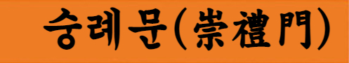

서울특별시 중구에 있는 조선전기에 축조된 서울도성의 성곽문. 국보.
[출처: 한국민족문화대백과사전(서울 숭례문(─崇禮門))]
규모: 1동(177.82㎡)
건립시기: 1398년(태조 7)
숭례문은 일명 남대문(南大門)이라고도 하는데, 서울 도성의 사대문 가운데 남쪽에 있기 때문에 붙여진 이름이다. 1962년 12월 20일에 국보로 지정되었고, 문화재청 숭례문 관리소에서 관리하고 있다.
서울 숭례문은 1396년(태조 5) 축조된 서울도성의 정문으로, 1398년(태조 7) 2월에 준공되었다. 그 뒤 1448년(세종 29) 개수공사가 완료되었으며, 1961년부터 1962년 사이에 실시된 해체수리 때 발견된 상량문(上樑文)에서 1479년(성종 10)에도 대대적인 중수공사가 있었음을 알 수 있다. 이 건물은 정면 5칸, 측면 2칸의 중층건물이며, 화강암으로 구축한 홍예형(虹霓形)의 누기(樓基)와 마름석축으로 이루어진 기층의 중앙에 홍예문이 있으며 판문에 철갑을 씌운 두 짝의 문이 달려있다.
석축기단 윗면에는 전돌로 쌓은 여장(女墻)을 돌리고 동서 양쪽에 협문을 한 개씩 두어 계단을 통하여 오르내릴 수 있게 하였으며, 문의 앞뒤 여장 밑에는 석루조(石漏槽)를 4개씩 설치하였다. 기단의 양측에는 원래 성벽이 연결되어 있었으나, 1908년 길을 내기 위하여 헐어내어 현재와 같은 모습을 하고 있다.
건물 내부의 아래층 바닥은 홍예의 윗면인 중앙간만이 우물마루일 뿐, 다른 칸은 흙바닥으로 되어 있고 위층은 널마루이다.
기둥은 모두 굵직한 두리기둥인데, 기둥뿌리에 나직한 하방(下枋)을 걸고 기둥머리에는 키가 큰 창방(昌枋)을 걸었다. 창방과 기둥 위에는 널찍하고 두툼한 평방을 돌리고 그 위에 공포를 올렸다. 공포는 기둥 위쪽과 건물의 앞뒷면 중앙간에는 네 개씩, 다른 기둥 사이에는 두 개씩의 공간포(空間包)를 올렸고, 양 측면에도 두 개씩의 공간포를 올렸으며 내외포(內外包)가 모두 이출목(二出目)이다. 위층에는 기둥 사이의 중방(中枋)과 창방 사이에 작은 창(窓)이 나 있다.
공포는 외삼출목칠포작(外三出目七包作), 내이출목오포작(內二出目五包作)이고 천장의 가구(架構)는 연등천장이다. 지붕은 아래위층 모두 겹처마로 사래 끝에는 토수(吐首)를 씌우고 추녀마루에는 잡상(雜像)과 용두(龍頭)를 올려놓았으며, 용마루 양끝에는 취두(鷲頭)를 올린 우진각 지붕으로 되어 있다. 또한 최근의 수리 결과, 원래는 팔작지붕이었으며 아래위층의 살미첨차의 하향을 막기 위한 헛공아가 후세의 첨가물임이 밝혀져 제거되었고, 공포 사이의 포벽(包壁)도 토벽(土壁)으로 내외면을 단청하여 연화 또는 당초문 등이 그려져 있었다.
그러나 이 역시 후세의 공작임을 알게 되어 제거되었다.
도성의 사대문 중 인왕산의 남쪽 기슭에서 남산의 북서쪽 기슭 사이에 자리 잡고 있는 것이 숭례문이다. 조선시대 한양 도성의 대문이었던 숭례문은 당시 방어적 성곽의 관문으로 군사적 방어로서의 일차적 기능이 있었다. 숭례문은 성곽의 문이라는 그 군사적 기능에 충실하게 축조되었는데 화강암 석재로 6~7m의 높이로 육중하고 견고하게 육축을 쌓았을 뿐 아니라, 출입문 또한 12cm의 두꺼운 판목에 철엽을 덧씌워 내화성을 보강하는 등 외적 방어의 기능을 잘 갖추고 있다.
또한 숭례문은 성의 안팎을 연결하는 통로였다.
단순한 통로 이상의 의미를 지니는데, 왕이 지나고 중국 사신들을 맞이하는 등 국가적 의례 시 통로로 대표성을 가지고 있었다. 숭례문은 다른 성곽 문에 비해 큰 규모를 갖는다. 이는 숭례문이 도성의 문이기 때문인데, 임금의 행차에 따른 어도(御道)나 국가 의례 행차, 혹은 임금의 상(喪)때 대여(大輿)가 지나갈 수 있도록 폭과 높이를 갖추어야 했다.
숭례문은 조선 도로망의 기점이기도 하였다. 특히 도성 내 주요대로 끝단에 위치하고 있던 숭례문은 전국으로 뻗는 도로망의 시작이었으며 도성으로 들어오는 관문이었던 것이다.
조선 건국 이후 태조는 한양으로의 천도를 추진하였고, 1394년 10월 25일 천도를 하게 되면서 궁궐, 종묘 및 여러 관아 등을 신축하였다.
태조 이성계는 창업의 시기에, 왕위에 오른 지 한 달도 되지 않아 수도를 옮길 것을 지시하였으며 왕조의 이름을 바꾸는 것보다 천도문제를 먼저 서두르는 모습을 보인다. 태조는 도성 쌓을 터를 수차례에 걸쳐 직접 둘러 보았을 뿐만 아니라 공신들과 누차 토론하는 등 도성 축성에 심혈을 기울인다. 이렇게 정해진 도성으로서 한양의 입지는 북쪽의 백악산(342m), 동쪽의 낙산(타락산, 125m), 남쪽의 목멱산(265m), 서쪽의 인왕산(338m)의 내사산(內四山)으로 둘러싸인 분지를 형성하는데, 이 산들의 능선을 따라 성곽을 쌓았다.
여기서 도성의 성문이란, 왕이 거주하는 왕성(王城) 및 종묘(宗廟)와 사직(社稷)이 있는 곳을 도성이라 하는데 그 성곽의 성문을 말하는 것이다. 도성 문의 방향은 역(易)사상에 입각한 주역 8괘를 사용하여 4대문과 4소문의 8개소로 설치하였다. 그러나 절대적 방위의 개념으로 정확하게 성문의 위치를 정하지는 않았으며, 전체적으로 기본적 방위를 부여한 후 자연 지세에 맞도록 문을 내었다.
한양의 지형은 대체적으로 남북방향보다 동서방향이 더 평탄하여 동서방향으로 성문이 집중된 모습을 보인다.
편액의 필자에 관해서는 여러 가지 설이 있으나, 『지봉유설(芝峰類說)』에는 양녕대군(讓寧大君)이 쓴 것이라고 기록되어 있다. 이 성문의 예자(禮字)는 오행에 배치하면 불[火]이 되고 오방(五方) 배치하면 남쪽을 지칭하는 말인데, 다른 문의 편액이 가로쓰임이나 숭례문이 세로로 쓰여 있는 것은 숭례의 두 글자가 불꽃 염[炎]을 의미하여 경복궁을 마주보는 관악산의 화산(火山)에 대하는 것이라 한다. 숭례문은 서울에 남아 있는 목조 건물 중 가장 오래된 것이었다.
그러나 2008년 2월 10일 오후 8시 40분 쯤에 발생한 화재로 숭례문의 2층 누각의 90%가 전소되고, 1층 누각의 10% 미만이 소실되었다.
다행히 기반 석축은 화재사고로부터 안전하였다. 화재 이후 2010년 2월 착공식을 거행하고 숭례문복구공사 작업을 시작하였다. 복구공사는 약 3년의 기간을 거친뒤 2013년 5월 4일 복구기념식을 거행하고 시민에게 공개되었다.
^
TOP